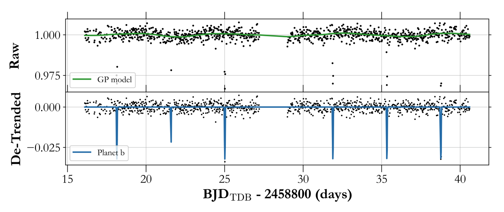
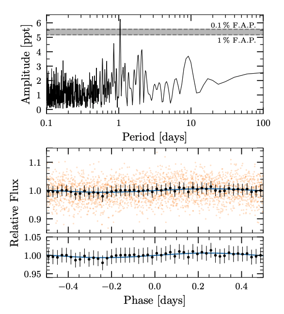
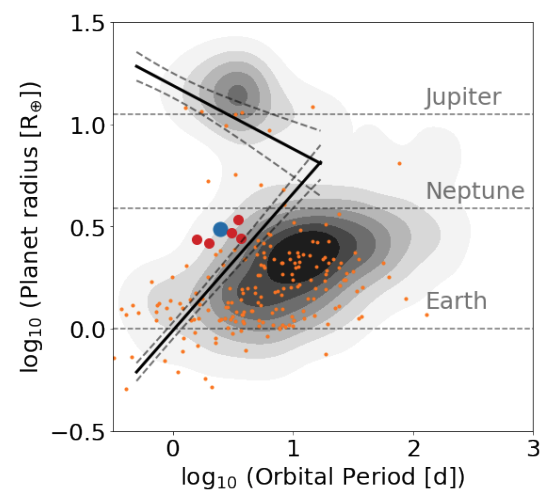

STATUS UPDATE: The Cycle 5 proposal deadline is this Friday - March 18th, 2022 at 4:30pm EDT. Find out more here
Welcome TESS followers to our latest news bulletin.
Before we highlight some of the more recent papers from the archive, we would like to introduce you to the two newest members of our team - Dr. Christina Hedges and Dr. Veselin Kostov. View our Help Desk for more information about TESS GI team.
Now on to the papers!
TOI-3757 b: A low density gas giant orbiting a solar-metallicity M dwarf (Kanodia et. al., 2022) :
A new Jovian sized planet has been discovered by TESS, and confirmed using precise radial velocities from HPF and NED. The planet has been given the designation TOI-3757b and is the lowest density planet orbiting an M dwarf (a solar metallicity M0V star). The planet has a radius of 12.0 R⊕ and mass of 85.3 M⊕ making it one of roughly 10 known gas giants around M-dwarfs, and one which has a low density of ρ= 0.27 g cm-3.
The authors of the paper state that the low density could be due either to the low metallicity of the host star, which may have delayed the formation of a solid core massive enough to initiate runaway accretion; or given its eccentricity (e = 0.14) significant tidal heating may have occurred, inflating the radius. See this fascinating paper for more details.
Gaia0007-1605: an old triple system with an inner brown dwarf-white dwarf binary and an outer white dwarf companion (Rebassa-Mansergas et. al., 2022) :
Gaia0007-1605AC is the first inner brown dwarf-white dwarf binary of a hierarchical triple system in which the outer component is another white dwarf, know as Gaia0007-1605B.
Using optical/near-IR spectroscopy from the Very Large Telescope (X-Shooter), Gaia photometry, and SED fitting, the authors of this paper have determined the effective temperatures and masses of the white dwarfs in the system as 12018 K and 0.54 Msun for Gaia0007-1605A and 4445 K and 0.56 Msun for Gaia0007-1605B. The brown dwarf has and effective temperature of 1850 K which means it has a spectral type of L3.
The TESS light curve was used to determine a signal of 1.0446 days for Gaia0007-1605AC, with an amplitude of 6.25 ppt. This signal is interpreted as the orbital period modulated from irradiation effects of the white dwarf on the brown dwarf's surface.
The paper goes on to discuss the evolution of the inner binary and the system as a whole, which is estimated to be about 10 Gyr old.
TOI-1696: a nearby M4 dwarf with a 3R⊕ planet in the Neptunian desert (Mori et. al., 2022) :
In this paper the authors present their discovery of temperate sub-Neptune around its M-dwarf host TOI-1696.
Using TESS data, in addition to followup ground-based observations, the radius of the planet was determined as 3.09 R⊕ and its orbital period as 2.5days. The mass of the planet is estimated as 48.8M⊕ and was determined from radial velocities measured by IRD.
Stellar parameters were determined using spectroscopic observations: Type = M4 dwarf, Teff = 3185 K, and metallicity = 0.336 dex.
Additional observations from several facilities also led the authors to determine that there are no stellar companions or background sources to the star.
The planet belonging to the Neptunian desert with the highest transmission spectroscopy metric discovered to date.

Fig. 1: Taken from Kanodia et. al., (2022). Long cadence (30 minute) time series TESS eleanor photometry from Sector 19, along with a stellar rotation GP kernel (RotationTerm from celerite2) in green. The de-trended photometry is shown in the bottom panel, with the TOI-3757b transits overlaid in blue.

Fig. 2: Taken from Rebassa-Mansergaset. al., (2022). Top panel: Lomb-Scargle periodogram of the TESS light-curve. The strongest signal at 1.0446±0.0015 days exceeds the 1 and 0.1 % false-alarm-probability (F. A. P.) thresholds. Middle panel: folded light-curve, obtained from the 1.0446 days period. The black symbols are the binned light-curve at 30-min intervals and the error bars represent the 1-σ scatter in each bin. The blue sinusoidal curve corresponds to the detected periodic signal. Bottom panel: zoomed panel on the binned light-curve.

Fig. 3: Taken from Mori et. al., (2022). TOI-1696 b (blue) in the context of known transiting planets (contours). TOI-1696 b appears to be within or close to the boundaries of the Neptunian desert (solid black lines) in the period-radius plane defined by Mazeh et al. (2016). The dashed lines refer to the boundaries’ uncertainty regions. The orange points indicate planets orbiting M dwarfs (Teff < 3800K) and the red points indicate the five planets most similar in this parameter space to TOI-1696 b: K2-25 b, K2-320 b, GJ 1214 b, TOI-269 b, and TOI-2406 b.